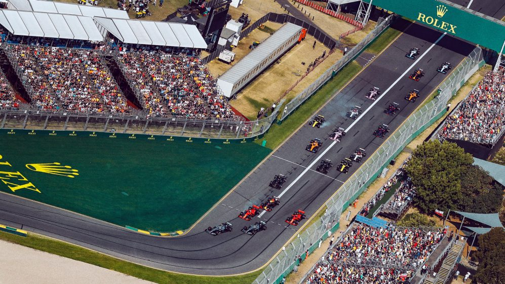

AUSTRALIAN GRAND PRIX
Cicuit Length:
5.303 km (3.296 mi)
Turns:
16
Number of Laps:
58
First Grand Prix:
1996
Race Distance:
307.574 km
Australia's race takes place in the city of Melbourne. Melbourne is the capital of Australia,
about 4.9 million people live in Melbourne. And across Australia live about 25 million inhabitants. So far the record holder
of this circuit is Michael Schumacher with 4 victories to his name. Normally, the Melbourne event attracts around 300,000
spectators. This year (2021) the race will be on March 21. The fastest speed last year (2019) was measured at 322 km / h
(200.4 mph). The Australian Grand Prix is often the very first event of the Formula 1 of the Calendar year.

Winners of the Australian GP
2020 - Canceled due to Corona
2019 - Valtteri Bottas
2018 - Sebastian Vettel
2017 - Sebastian Vettel
2016 - Nico Rosberg
2015 - Lewis Hamilton
2014 - Nico Rosberg
2013 - Kimi Räikkönen
2012 - Jenson Button
2011 - Sebastion Vettel
2010 - Jenson Button
2009 - Jenson Button
2008 - Lewis Hamilton
2007 - Kimi Räikkönen